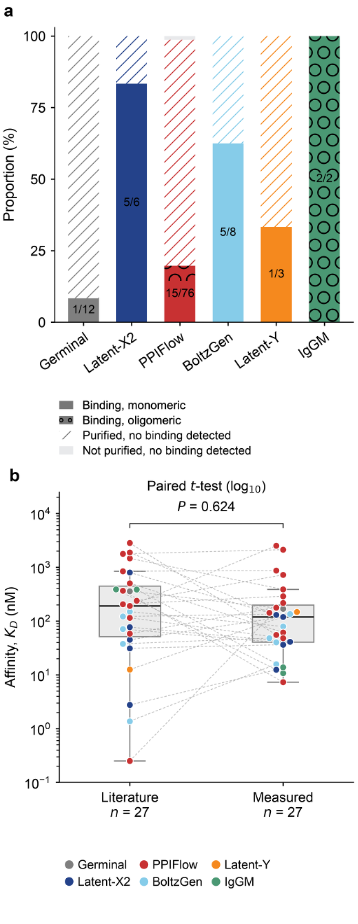
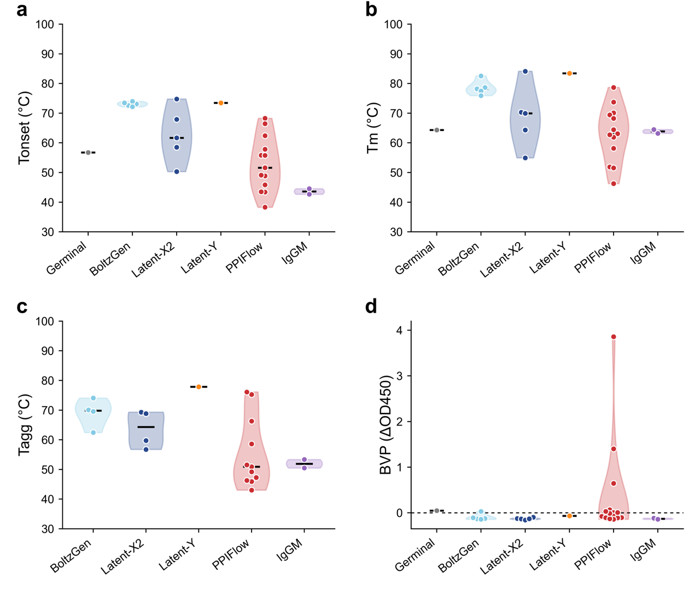
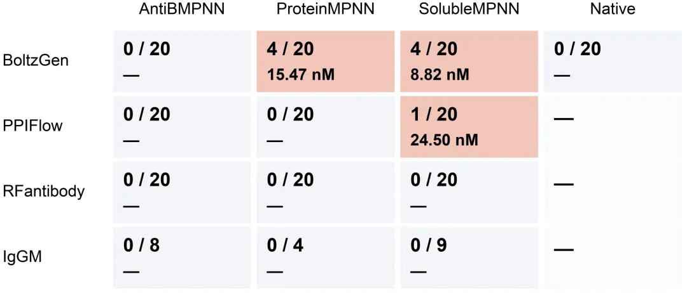
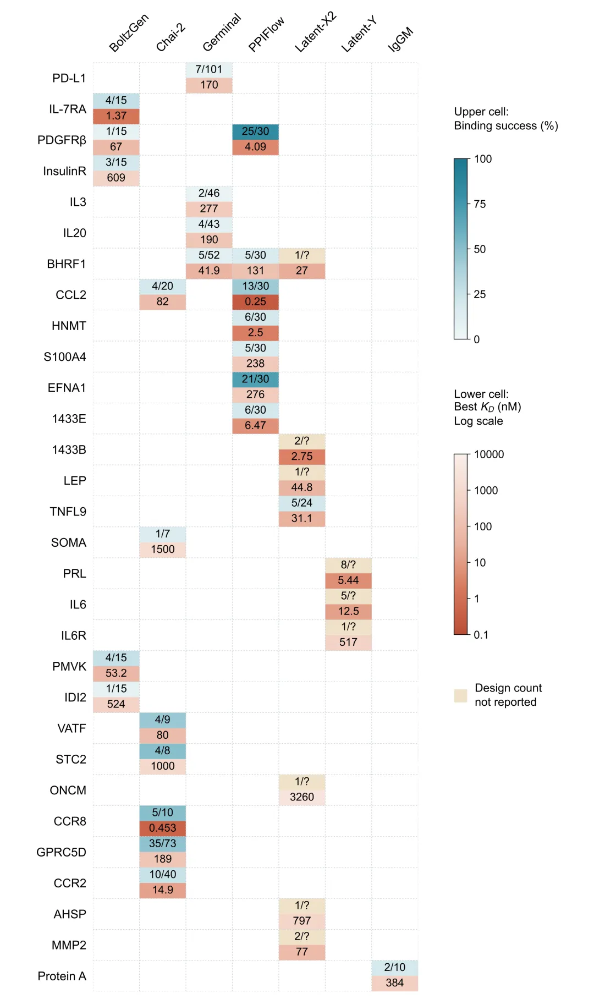

On November 17, 2026, Isomorphic Labs announced a $5 billion Series C. The financing reflects considerable investor confidence in AI-driven drug discovery. For researchers, it raises a practical question: what experimental evidence is needed before an AI-designed molecule can be considered for further development?[1]
Binder design offers a useful case study. Several methods report experimentally confirmed binding, and public competitions have produced candidates with nanomolar affinities. An unresolved question is how often published binding results can be reproduced after independent expression, purification, and measurement.
- Published binding results require independent confirmation. In the evaluation discussed here, only 29 of 107 literature-reported positive sequences showed detectable binding under the retest conditions.
- Aggregation complicates the interpretation of binding signals. Six of those 29 positives were classified as highly aggregated in the accompanying table; those signals require further validation. The other 23 showed binding without reported high aggregation; further characterization is still needed.
- The paired analysis does not show a systematic difference in affinity. Among 27 paired KD records, the report found no significant overall difference. This comparison excludes sequences for which paired affinity measurements were unavailable.
- Independent, transparent benchmarking should become routine. Two additional design campaigns yielded 9/221 hits against IL-7Rα and 0/105 against PD-L1. These are results for particular pipelines and targets, not universal model success rates.
Public competitions demonstrate progress, with assay-specific limitations.
Adaptyv Bio’s Nipah binder competition provides evidence of experimental progress. Its published results overview describes 1,196 tested designs, 111 binders, and 28 designs with single-digit nanomolar affinity or better. Designs from multiple computational workflows reached the top of the experimental ranking.[2] These results demonstrate that computational design workflows can produce experimentally detectable interactions.
The reported affinities require care in interpretation. Because the Nipah target is tetrameric, Adaptyv describes bivalent and conformational effects and reports standardized 1:1 proxy KD values for ranking. These values should therefore be interpreted in the context of the assay and fitting procedure.[2]
Independent retesting addresses whether a reported interaction can be detected in another laboratory under a specified experimental protocol.
01 / ReproducibilityBinding was detected for 29 of 107 reported binders.
In a November 16 report, Spiritein retested 107 sequences previously reported as binders. Under its unified workflow, 29 showed detectable binding: 27.1%. The authors report that some previously high-affinity candidates showed no signal even at 2 μM.[3, pp. 5–7]
The accompanying table classifies six of the 29 binding-positive candidates as highly aggregated: four PPIFlow candidates and both IgGM candidates. Further validation is needed to distinguish specific interactions from aggregation-related effects. Excluding those six leaves 23/107, or 21.5%, with binding and no reported high aggregation. This counts candidates with detectable binding and no reported high aggregation, rather than development-ready leads.

The differences across the tested sets are large: Germinal 1/12, Latent-X2 5/6, PPIFlow 15/76, BoltzGen 5/8, Latent-Y 1/3, and IgGM 2/2. Sample sizes, target composition, and aggregation outcomes differ between groups. IgGM’s apparent 100% is two aggregated positives; Latent-X2’s 83.3% comes from six sequences. These small, heterogeneous groups do not support a general ranking of model performance.
Failure to detect binding in a different assay does not, by itself, invalidate the original measurement. Constructs, tags, expression systems, target preparation, immobilization, assay sensitivity, and fitting choices can change the outcome. Resolving these discrepancies requires detailed protocols and, where possible, matched experiments that isolate the effects of these variables.
02 / Affinity claimsPaired affinity measurements cover only part of the retested set.
The paired analysis includes 27 records and reports a paired t-test on log10 KD with P = 0.624. It does not detect a significant overall shift between published and measured affinities.[3, Figure 2] A non-significant result does not establish equivalence, and substantial differences may remain between individual pairs.
The analysis does not include all 107 sequences: a paired comparison requires both a published and a measured KD. It describes agreement among available pairs, rather than the probability of confirming a reported interaction. The aggregation status of those 27 records also needs to be considered.
Binding confirmation and affinity agreement are separate outcomes. Both should be reported.
Assessing affinity claims requires the full experimental record: sensorgrams, concentration series, replicate behavior, fit residuals, kinetic model, and aggregation controls. The strongest affinity reported in a paper provides limited information about the distribution of outcomes or the performance of independently prepared samples.
03 / DevelopabilityBinding alone does not establish developability.
The report assessed thermal behavior and binding to baculovirus particles (BVP), used here as an in vitro indicator of nonspecific binding. The revised plots show a broad spread in melting and aggregation temperatures. Several PPIFlow candidates show elevated BVP signals, suggesting potential nonspecific-binding liabilities that require further investigation.[3, pp. 7–8]

These measurements identify potential liabilities in individual candidates. They do not assess immunogenicity or provide a matched comparison with conventionally discovered antibodies, so they cannot establish the relative developability of the two approaches.
Further development requires characterization of association and dissociation kinetics, specificity, functional activity, and suitability of the molecular format, followed by relevant pharmacology and safety studies. Binding affinity is only one component of that assessment.
04 / Prospective design testsNew design campaigns showed low hit rates on two targets.
IL-7Rα: 9 hits from 221 tested candidates
The first new design campaign combined four structure-generation methods—BoltzGen, RFantibody, PPIFlow, and IgGM—with three sequence-design methods, plus BoltzGen’s native sequence route. The 13 routes generated roughly 960,000 sequences. Candidates went through common Rosetta, AlphaFold2-IG, and AlphaFold3 filtering, with final ranking by AlphaFold3 ipTM; the intended allocation was up to 20 candidates per route. Some routes produced fewer qualifying candidates. Ultimately, 221 were sent to a third-party CRO.[3, pp. 8–9]
Nine bound: 4.1% of tested candidates. Eight came from BoltzGen paired with ProteinMPNN or SolubleMPNN, each 4/20; the remaining hit came from PPIFlow plus SolubleMPNN, 1/20. The best reported KD was 8.82 nM.

BoltzGen’s two successful combinations are encouraging within this campaign. Outcomes differed between sequence-design methods, emphasizing the need to evaluate the complete workflow. The 4.1% figure describes a selected set under one shared filtering pipeline. It is neither the hit rate across all 960,000 generated sequences nor a universal estimate for the component models. A common filter standardizes evaluation, but can also favor some generators over others.
PD-L1: expression succeeded; binding did not
A second campaign tested 105 candidates from BoltzGen, Germinal, OpenDDE-harness, and HalluDesign. The source figure reports successful purification for 37/40, 18/20, 25/25, and 20/20 candidates, respectively—100/105 purified overall. Yet all four routes returned zero detectable binders.[3, Figure 7, p. 10]
Binding: 0/40 · 0/25 · 0/20 · 0/20
Successful expression and purification did not translate into detectable target binding. A target’s established therapeutic tractability also does not make de novo nanobody design against it easy.
The absence of hits is a negative result for the tested workflows under the reported conditions. It does not establish a zero underlying success probability or rule out successful designs using other constructs, sampling budgets, or selection procedures. Performance on PD-L1 must be assessed directly rather than inferred from results on other targets.
What should independent evaluation include?
For researchers comparing methods or selecting candidates for follow-up, the designation “experimentally validated” is insufficient without assay conditions and candidate-level results. Several reporting practices would make published results easier to assess.
- Report candidate counts at each stage. Generated, computationally filtered, selected, synthesized, expressed, purified, binding-positive, non-aggregating, and functionally active are different populations. Give counts at every stage.
- Provide the data needed to assess each measurement. Release sequences, exact constructs and tags, assay conditions, raw curves, fit models, replicates, and negative results. Report affinity alongside kinetics and molecular quality.
- Separate discovery from confirmation. Re-express and re-purify selected hits; seek an orthogonal assay and independent confirmation, ideally with blinded sample identities and predefined criteria.
- Benchmark across targets and full pipelines. State model versions, compute and sampling budgets, filtering rules, and how candidates were allocated. Account for uncertainty, sample size, and target selection when comparing methods.
- Fund third-party evaluation as research infrastructure. Independent laboratories, public raw data, and shared reference materials can support systematic assessment of reproducibility across laboratories.
The evaluation discussed here also requires independent scrutiny. It is described in a company-authored report with limited methodological detail. The authors state that code, workflows, and raw experimental data will be released through AbGround.[3, p. 11] Review of those materials will be necessary to assess candidate selection, assay quality, and possible causes of disagreement with the original studies.
Independent confirmation should become a routine part of evaluating AI-designed binders.
The results reviewed here justify closer scrutiny of published hit rates and affinity claims. They do not support a single failure rate for AI binder design as a whole. Before relying on a reported binder for further development, researchers should confirm its binding, examine sample and assay quality, and establish whether the result can be reproduced independently.
Additional figure: published binding results

Sources
- Isomorphic Labs, November 17, 2026. Series C announcement.
- Adaptyv Bio / Proteinbase. Nipah Competition Results.
- Spiritein, November 16, 2026. 论文里的SOTA，实验里的问号：AI抗体设计离临床前还有多远？ [“SOTA in papers, question marks in experiments: how far is AI antibody design from preclinical development?”].